<title>Hassan Nosreldin</title>
<meta name="claude:viewport-fit-sides" content="cover">
<link rel="preconnect" href="https://fonts.googleapis.com">
<link rel="preconnect" href="https://fonts.gstatic.com" crossorigin>
<link rel="stylesheet" href="https://fonts.googleapis.com/css2?family=Archivo:wght@500;600;700&family=Inter:wght@400;500;600&family=JetBrains+Mono:wght@400;500&display=swap">

<style>
/* Layout: sticky nav; home is a single centred column; a project page is a
   sticky section index on the left beside a 640px reading column. */
:root{
  --bg:#FCFCFB;
  --surface:#FFFFFF;
  --ink:#141D18;
  --ink-2:#5B6660;
  --ink-3:#919A94;
  --line:#E5E8E4;
  --line-2:#F0F2EE;
  --accent:#B81E63;
  --mono:"JetBrains Mono",ui-monospace,SFMono-Regular,Menlo,monospace;
  --sans:"Inter",-apple-system,BlinkMacSystemFont,"Segoe UI",sans-serif;
  --display:"Archivo","Inter",-apple-system,sans-serif;
  --gut:max(20px,env(safe-area-inset-left,0px));
  --gutr:max(20px,env(safe-area-inset-right,0px));
}
@media (prefers-color-scheme:dark){
  :root:not([data-theme="light"]){
    --bg:#0F1613; --surface:#161F1A; --ink:#EAEEEA; --ink-2:#A0ABA4;
    --ink-3:#737E78; --line:#27332C; --line-2:#1D2822;
    --accent:#F2609B; color-scheme:dark;
  }
}
:root[data-theme="dark"]{
  --bg:#0F1613; --surface:#161F1A; --ink:#EAEEEA; --ink-2:#A0ABA4;
  --ink-3:#737E78; --line:#27332C; --line-2:#1D2822;
  --accent:#F2609B; color-scheme:dark;
}

*{box-sizing:border-box}
body{
  background:var(--bg); color:var(--ink);
  font-family:var(--sans); font-size:16px; line-height:1.68;
  -webkit-font-smoothing:antialiased; margin:0;
}
body::before{content:"";position:fixed;inset:0 0 auto;height:env(safe-area-inset-top,0px);z-index:60;background:var(--bg)}
img{display:block;max-width:100%;height:auto}
a{color:inherit}

/* ---------- nav ---------- */
.nav{
  position:sticky; top:env(safe-area-inset-top,0px); z-index:50;
  background:color-mix(in srgb,var(--bg) 88%,transparent);
  backdrop-filter:saturate(1.4) blur(12px);
  border-bottom:1px solid var(--line);
}
.nav-in{
  max-width:1180px; margin:0 auto;
  padding-left:var(--gut); padding-right:var(--gutr); padding-block:15px;
  display:flex; align-items:center; gap:18px;
}
.brand{
  font-family:var(--display); font-weight:700; font-size:15.5px;
  letter-spacing:-.01em; text-decoration:none; white-space:nowrap;
}
.nav-links{display:flex; gap:22px; margin-left:auto; align-items:center}
.nav-links a{
  font-size:14.5px; font-weight:500; text-decoration:none; color:var(--ink-2);
  padding-bottom:2px; border-bottom:1.5px solid transparent;
}
.nav-links a:hover{color:var(--ink)}
.nav-links a.on{color:var(--ink); border-bottom-color:var(--ink)}
.nav-ext{display:flex; gap:14px; align-items:center; padding-left:4px}
.nav-ext a{color:var(--ink-3); display:flex}
.nav-ext a:hover{color:var(--accent)}
.nav-ext svg{width:18px; height:18px}

/* ---------- shared ---------- */
.wrap{max-width:1180px; margin:0 auto; padding-left:var(--gut); padding-right:var(--gutr)}
.eyebrow{
  font-size:11px; font-weight:600; letter-spacing:.13em; text-transform:uppercase;
  color:var(--ink-3); margin:0 0 10px;
}
h1,h2,h3{font-family:var(--display); letter-spacing:-.02em; text-wrap:balance; margin:0}
h1{font-size:clamp(34px,6vw,50px); font-weight:700; line-height:1.08}
h2{font-size:clamp(23px,3.4vw,28px); font-weight:700; line-height:1.2}
h3{font-size:17px; font-weight:600; line-height:1.3}
p{margin:0}

/* ---------- home ---------- */
.hero{
  display:grid; grid-template-columns:1fr 300px; gap:56px; align-items:start;
  padding-block:68px 60px;
}
.hero-copy{display:flex; flex-direction:column; gap:20px; max-width:34em}
.hero-copy p{color:var(--ink-2); font-size:16.5px}
.hero-copy p strong{color:var(--ink); font-weight:600}
.portrait{
  aspect-ratio:1/1; border-radius:14px; overflow:hidden;
  background:var(--line-2); border:1px solid var(--line);
}
.portrait img{width:100%;height:100%;object-fit:cover}
.mailrow{display:flex; flex-wrap:wrap; gap:10px; align-items:center}
.mail{
  font-family:var(--mono); font-size:14px; color:var(--ink);
  background:var(--surface); border:1px solid var(--line);
  border-radius:8px; padding:7px 11px; user-select:all;
}
.btn{
  font:inherit; font-size:13px; font-weight:500; cursor:pointer;
  background:transparent; border:1px solid var(--line); color:var(--ink-2);
  border-radius:8px; padding:8px 12px;
}
.btn:hover{border-color:var(--ink-3); color:var(--ink)}
.jump{
  align-self:flex-start; font-size:15px; font-weight:600; text-decoration:none;
  border-bottom:2px solid var(--accent); padding-bottom:2px; margin-top:4px;
}

.sec-head{
  display:flex; align-items:baseline; gap:14px;
  border-top:1px solid var(--line); padding-top:22px; margin-bottom:26px;
}
.cards{
  display:grid; grid-template-columns:repeat(auto-fit,minmax(300px,1fr));
  gap:22px; padding-bottom:34px;
}
.card{
  display:flex; flex-direction:column; text-decoration:none;
  border:1px solid var(--line); border-radius:14px; overflow:hidden;
  background:var(--surface); transition:border-color .18s,transform .18s;
  max-width:560px;
}
.card:hover{border-color:var(--ink-3); transform:translateY(-2px)}
.card-img{aspect-ratio:16/10; background:var(--line-2); overflow:hidden}
.card-img img{width:100%; height:100%; object-fit:cover}
.card-body{padding:18px 20px 20px; display:flex; flex-direction:column; gap:7px; flex:1}
.card-kind{
  font-size:10.5px; font-weight:600; letter-spacing:.13em; text-transform:uppercase;
  color:var(--ink-3);
}
.card h3{font-size:19px}
.card p{font-size:14.5px; color:var(--ink-2); line-height:1.55}
.card-go{margin-top:auto; padding-top:12px; font-size:13.5px; font-weight:600; color:var(--accent)}

.toolbar{display:flex; flex-wrap:wrap; gap:8px; padding-bottom:70px}
.chip{
  font-family:var(--mono); font-size:12.5px; color:var(--ink-2);
  border:1px solid var(--line); border-radius:999px; padding:5px 12px;
  background:var(--surface);
}

/* ---------- project page ---------- */
.proj{padding-block:46px 80px}
.proj-head{max-width:720px; display:flex; flex-direction:column; gap:16px; margin-bottom:34px}
.proj-head p{color:var(--ink-2); font-size:17px}
.meta{
  display:flex; flex-wrap:wrap; gap:0 28px; border-top:1px solid var(--line);
  border-bottom:1px solid var(--line); padding-block:14px; margin-top:6px;
}
.meta div{display:flex; flex-direction:column; gap:2px; padding-block:4px}
.meta dt{font-size:10.5px; font-weight:600; letter-spacing:.12em; text-transform:uppercase; color:var(--ink-3)}
.meta dd{margin:0; font-size:14.5px; font-weight:500}

.cols{display:grid; grid-template-columns:200px minmax(0,1fr); gap:54px; align-items:start}
.toc{position:sticky; top:calc(env(safe-area-inset-top,0px) + 86px)}
.toc-label{
  font-size:10.5px; font-weight:600; letter-spacing:.13em; text-transform:uppercase;
  color:var(--ink-3); margin-bottom:12px;
}
.toc ol{list-style:none; margin:0; padding:0; border-left:1px solid var(--line)}
.toc a{
  display:block; text-decoration:none; font-size:13.5px; line-height:1.4;
  color:var(--ink-2); padding:7px 0 7px 15px; margin-left:-1px;
  border-left:2px solid transparent;
}
.toc a:hover{color:var(--ink)}
.toc a.on{color:var(--ink); font-weight:600; border-left-color:var(--accent)}

.body{max-width:41em; min-width:0; display:flex; flex-direction:column; gap:20px}
.body h2{margin-top:32px; scroll-margin-top:110px}
.body h2:first-child{margin-top:0}
.body h3{margin-top:12px; color:var(--ink)}
.body p{color:var(--ink-2)}
.body strong{color:var(--ink); font-weight:600}
.body a{color:var(--accent); text-decoration:underline; text-underline-offset:2px}
.body ul{margin:0; padding-left:20px; color:var(--ink-2); display:flex; flex-direction:column; gap:7px}
.body code{
  font-family:var(--mono); font-size:13px; background:var(--line-2);
  padding:1.5px 5px; border-radius:4px; color:var(--ink);
}

figure{margin:10px 0; display:flex; flex-direction:column; gap:9px}
figure img,figure video{border:1px solid var(--line); border-radius:12px; background:var(--surface); width:100%}
figcaption{font-size:13px; color:var(--ink-3); line-height:1.5; text-align:center}
.two-up{display:grid; grid-template-columns:1fr 1fr; gap:14px}
.two-up figure{margin:0}
.two-up img{aspect-ratio:3/4; object-fit:cover}

.eq{
  border:1px solid var(--line); border-radius:10px; background:var(--surface);
  padding:16px 18px; font-family:var(--mono); font-size:14px; line-height:1.9;
  color:var(--ink); overflow-x:auto; white-space:nowrap;
}
.eq .note{color:var(--ink-3); font-size:12.5px; white-space:normal}

.callout{
  border:1px solid var(--line); border-left:3px solid var(--accent);
  border-radius:0 10px 10px 0; background:var(--surface);
  padding:16px 18px; display:flex; flex-direction:column; gap:8px;
}
.callout .eyebrow{color:var(--accent); margin:0}
.callout p{font-size:14.5px}

.tbl{overflow-x:auto; border:1px solid var(--line); border-radius:10px; background:var(--surface)}
table{border-collapse:collapse; width:100%; font-size:14px; min-width:420px}
th,td{text-align:left; padding:11px 15px; border-bottom:1px solid var(--line-2)}
th{font-size:10.5px; font-weight:600; letter-spacing:.1em; text-transform:uppercase; color:var(--ink-3)}
tr:last-child td{border-bottom:none}
td.num{font-family:var(--mono); font-variant-numeric:tabular-nums; white-space:nowrap}
td strong{color:var(--ink)}

.log{
  font-family:var(--mono); font-size:12.5px; line-height:1.75; color:var(--ink-2);
  background:var(--surface); border:1px solid var(--line); border-radius:10px;
  padding:15px 17px; overflow-x:auto; white-space:pre; margin:0;
}
.log b{color:var(--accent); font-weight:500}

footer{border-top:1px solid var(--line); padding-block:26px 40px; color:var(--ink-3); font-size:13.5px}

@media (max-width:860px){
  .hero{grid-template-columns:1fr; gap:34px; padding-block:44px 48px}
  .portrait{max-width:220px}
  .cols{grid-template-columns:1fr; gap:26px}
  .toc{position:static; border-bottom:1px solid var(--line); padding-bottom:20px}
  .toc ol{display:flex; flex-wrap:wrap; gap:0 6px; border-left:none}
  .toc a{padding:5px 11px; border-left:none; border:1px solid var(--line); border-radius:999px; margin:3px 0; font-size:12.5px}
  .toc a.on{border-color:var(--accent); color:var(--accent)}
  .two-up{grid-template-columns:1fr}
  .two-up img{aspect-ratio:auto}
}
@media (prefers-reduced-motion:reduce){*{transition:none!important; scroll-behavior:auto!important}}
html{scroll-behavior:smooth}
</style>

<nav class="nav">
  <div class="nav-in">
    <a class="brand" href="#home">Hassan Nosreldin</a>
    <div class="nav-links">
      <a href="#home" data-nav="home">Home</a>
      <a href="#greenhouse" data-nav="greenhouse">Projects</a>
    </div>
    <div class="nav-ext">
      <a href="https://www.linkedin.com/" target="_blank" rel="noopener" aria-label="LinkedIn">
        <svg viewBox="0 0 24 24" fill="currentColor" aria-hidden="true"><path d="M4.98 3.5a2.5 2.5 0 1 1 0 5 2.5 2.5 0 0 1 0-5zM3 9h4v12H3zM9 9h3.8v1.7h.05c.53-.95 1.83-1.95 3.76-1.95C20.6 8.75 22 11 22 14.3V21h-4v-5.9c0-1.4-.03-3.2-2-3.2-2 0-2.3 1.5-2.3 3.1V21H9z"/></svg>
      </a>
    </div>
  </div>
</nav>

<!-- ===================================================================
     HOME
     =================================================================== -->
<main id="view-home" class="wrap">

  <section class="hero">
    <div class="hero-copy">
      <h1>Hassan Nosreldin</h1>
      <p>I'm a mechatronics engineering student at <strong>UCSI University</strong> in Kuala Lumpur, finishing a BEng (Hons) in Mechatronic Engineering. I build systems where the firmware and the hardware have to agree with each other — embedded control, motion, sensing, and the awkward interfaces in between.</p>
      <p>Most of what I know came from things not working the first time. I'm looking for graduate roles in <strong>embedded systems, robotics and industrial automation</strong>.</p>
      <div class="mailrow">
        <span class="mail" id="email">7asko205@gmail.com</span>
        <button class="btn" id="copyBtn" type="button">Copy</button>
      </div>
      <a class="jump" href="#greenhouse">Projects</a>
    </div>

    <!-- PHOTO: swap img/me.jpg for a new file to change it. -->
    <div class="portrait">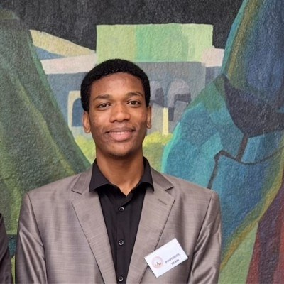</div>
  </section>

  <div class="sec-head"><h2>Projects</h2></div>

  <!-- ADD A PROJECT: copy this <a class="card"> block and change the text. -->
  <div class="cards">
    <a class="card" href="#greenhouse">
      <div class="card-img">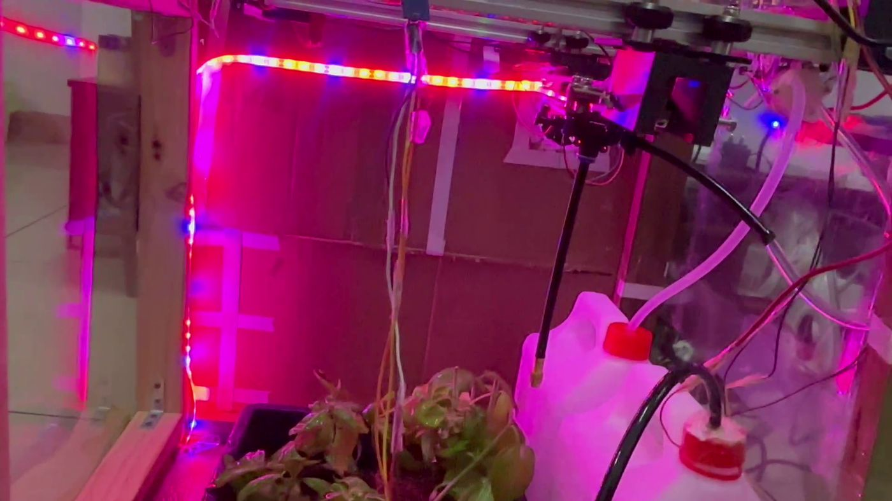</div>
      <div class="card-body">
        <div class="card-kind">Final Year Project</div>
        <h3>Intelligent Greenhouse</h3>
        <p>A closed-loop growing system for sweet basil. Two controllers, an XY spray gantry, and a lighting loop that landed within 0.3% of its daily target.</p>
        <div class="card-go">Read the write-up →</div>
      </div>
    </a>
  </div>

  <div class="sec-head"><h2>Tools</h2></div>
  <div class="toolbar">
    <span class="chip">C / C++</span><span class="chip">Python</span>
    <span class="chip">ESP32</span><span class="chip">Arduino</span><span class="chip">STM32</span>
    <span class="chip">Embedded control</span><span class="chip">UART / I²C</span>
    <span class="chip">Fusion 360</span><span class="chip">3D printing</span>
    <span class="chip">Blynk IoT</span><span class="chip">MATLAB</span>
    <span class="chip">Bench debugging</span>
  </div>

</main>

<!-- ===================================================================
     PROJECT — INTELLIGENT GREENHOUSE
     =================================================================== -->
<main id="view-greenhouse" class="wrap proj" hidden>

  <header class="proj-head">
    <div class="eyebrow">Final Year Project · 2026</div>
    <h1>Intelligent Greenhouse</h1>
    <p>A closed-loop environmental control and precision spraying system for sweet basil, built so that every actuator responds to something measured rather than to a clock.</p>
  </header>

  <div class="cols">
    <aside class="toc"><div class="toc-label">On this page</div><ol id="tocList"></ol></aside>

    <article class="body" id="article">

      <figure>
        
        <figcaption>The enclosure running. The magenta cast is the red–blue grow light.</figcaption>
      </figure>

      <!-- 1 -->
      <h2>Why not a timer?</h2>
      <p>Basil is a herb people eat, and in Malaysia its biggest problem is downy mildew. Most small growers handle it the way they handle light and water: on a schedule. Spray every Monday. Lamp on at six. Pump for two minutes each morning.</p>
      <p>A schedule has no idea what the plant actually received. On a bright day the lamp wastes power; on a dark one the plant goes short and nobody finds out. The pump runs for two minutes whether the soil is soaked or bone dry. And the spray happens on a calendar that has nothing to do with when the disease is dangerous.</p>
      <p>So the brief I set myself was narrow: <strong>every actuator responds to a measurement, and the one that puts chemical on an edible crop responds to accumulated evidence.</strong></p>

      <!-- 2 -->
      <h2>System architecture</h2>
      <p>I started with one microcontroller and it didn't work.</p>
      <p>Driving a stepper means emitting thousands of evenly spaced pulses per second, and any interruption shows up as a lost step. Running WiFi means being interrupted constantly and without warning. On one board the network corrupted the motion, the carriage drifted from where the firmware thought it was, and the spray pattern stopped being repeatable.</p>
      <p>So the work is split by what each board is good at. The <strong>ESP32</strong> owns all six sensors and every decision; the <strong>Arduino UNO</strong> owns the stepper pulses, the limit switches and both pump relays. The gantry was originally on an STM32F103 — the more capable chip — and I swapped it for the UNO because its timing was more predictable. Choosing the less capable part was the right call.</p>

      <figure>
        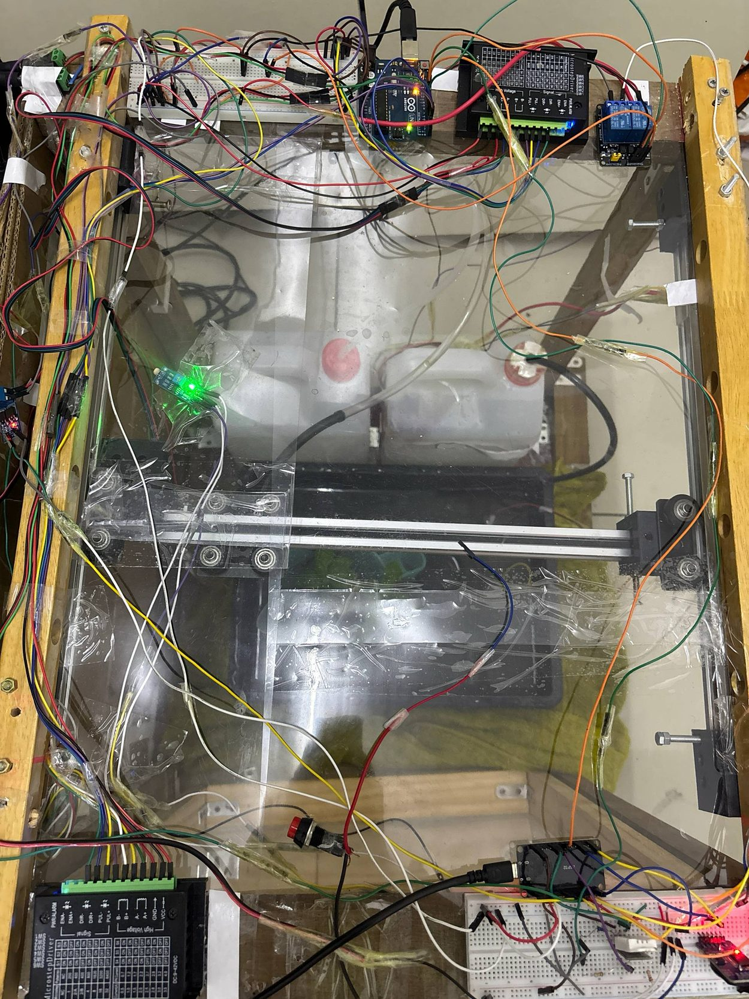
        <figcaption>Looking down into the enclosure. UNO and stepper drivers along the top rail, ESP32 and sensor breadboard at the bottom, gantry across the middle.</figcaption>
      </figure>

      <h3>Getting the two boards to agree</h3>
      <p>One serial wire at 9600 baud. Messages are wrapped between <code>$</code> and <code>*</code>, and anything outside a matching pair is discarded — serial data arrives corrupted or split, and without framing a burst of line noise can be read as a command that fires a pump.</p>
      <p>The first version sent the spray command and assumed it worked. If the wire were loose, the master would clear its risk counter and the plant would go untreated with no sign of a fault. Now it's a three-step exchange, and the counter only clears once the last message arrives:</p>

      <pre class="log">ESP32  →  <b>$START_SPRAY*</b>      command
UNO    →  <b>$ACK_START*</b>        received, starting now
UNO    →  <b>$ROW:1*  $ROW:2*</b>   progress
UNO    →  <b>$SCAN_DONE*</b>        finished, back home</pre>

      <h3>Three circuits that each exist because something broke</h3>
      <p>The UNO transmits at 5 V and the ESP32's input is rated for 3.3 V, so a 1 kΩ/2 kΩ divider on the return line gives 5 × 2/3 = <strong>3.33 V</strong>. A 1N4007 sits across each pump, because switching an inductive load throws a reverse spike that had already destroyed one relay contact. And a 10 kΩ pull-up holds the DHT22's data line defined when neither device is driving it.</p>
      <p>That last one cost me a night. The system was crashing, the soil probes were jumping between 0 and 100%, the light total kept resetting and a pump wouldn't stop — four symptoms I chased as four separate faults. The floating data line was picking up noise from the pump relay; the sensor library disables interrupts while it waits for a reply, and when the reply never came the watchdog panicked the core. Every reboot wiped the accumulator and corrupted whatever ADC conversion was in flight. One resistor fixed all of it.</p>
      <p>The supplies are split too — 5 V for the logic, 12 V for motors and pumps — because motors draw current in bursts that pull a shared rail down far enough to reset a microcontroller. The grounds still meet at one point, since a control signal is a voltage relative to ground and means nothing without a shared reference.</p>

      <!-- 3 -->
      <h2>Building it</h2>
      <p>The enclosure is a timber frame with acrylic panels, roughly 50 × 62 × 56 cm — about 174 litres. Timber because it's workable with hand tools and rigid enough to carry the gantry rails; acrylic because the plant needs light in and I needed to see what was happening.</p>

      <figure>
        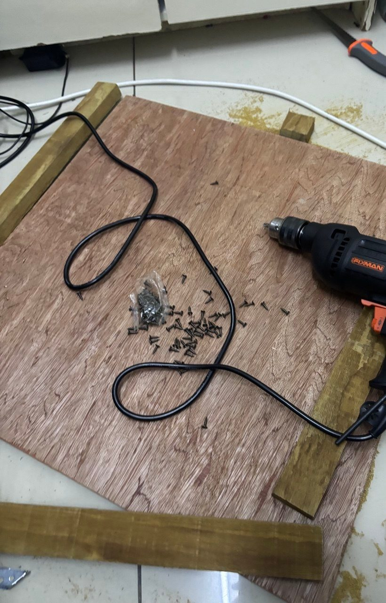
        <figcaption>Where it started.</figcaption>
      </figure>

      <p>Everything that holds a motor, a switch or the nozzle is printed rather than bought, which is the next section.</p>

      <!-- 4 -->
      <h2>3D printed parts</h2>
      <p>The motor mounts, the endstop brackets and the nozzle carrier are all designed in Fusion 360 and printed in PLA on a Creality Ender-3 V3 SE. Printing them rather than buying them is what made the geometry negotiable — when the spray height was wrong, the fix was a reprint overnight instead of a new order.</p>

      <div class="two-up">
        <figure>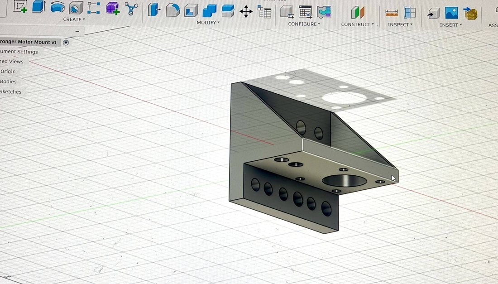<figcaption>The motor mount in Fusion 360.</figcaption></figure>
        <figure>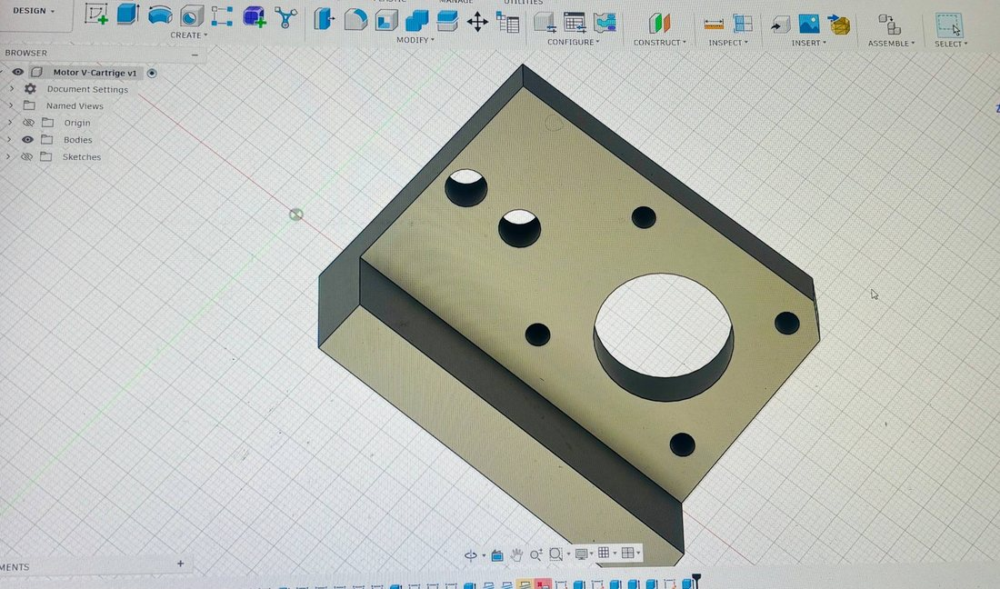<figcaption>Mounting face and motor bore.</figcaption></figure>
      </div>

      <p>The motor mount is the one worth talking about, because it snapped in service.</p>

      <figure>
        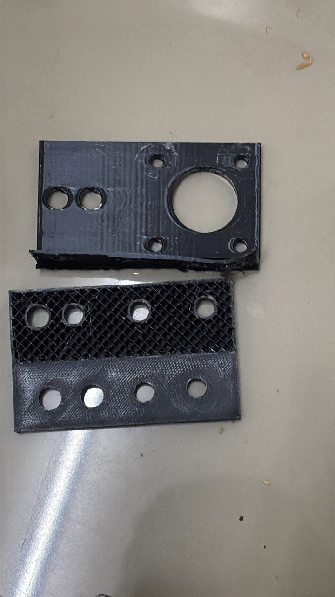
        <figcaption>The failure. You can see the infill in the break face.</figcaption>
      </figure>

      <p>That clean break is the tell. It didn't fracture through the plastic — it came apart along a layer line, which is why the infill pattern is sitting there exposed. Layer adhesion is the weakest direction in anything printed by fused deposition, and the way I'd laid the part flat on the bed put the load straight across it.</p>
      <p>So the real fix was in the slicer, not the CAD: rotate the part 90° so the layers run along the load path instead of across it. In CAD I then added two gussets and a fillet at the inside corner to spread the stress, and went to five wall loops with 40% gyroid infill. The reprint has carried the motor since.</p>

      <div class="two-up">
        <figure>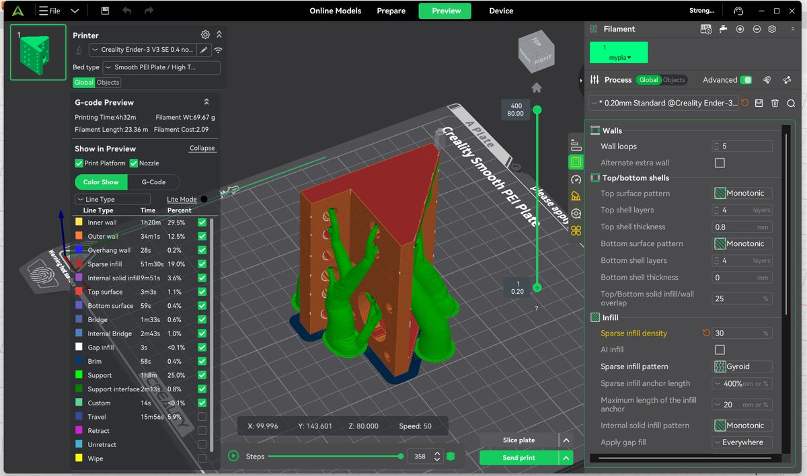<figcaption>Reoriented on the bed. The layer direction is the fix.</figcaption></figure>
        <figure>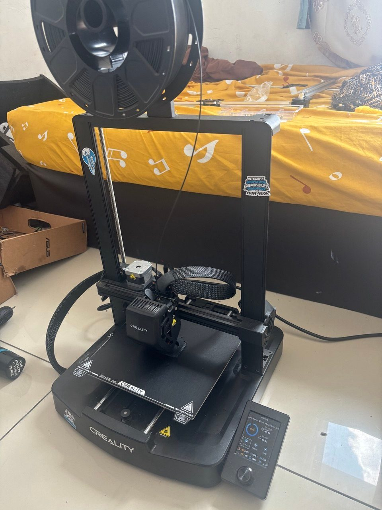<figcaption>Ender-3 V3 SE, PLA.</figcaption></figure>
      </div>

      <!-- 5 -->
      <h2>Lighting and irrigation</h2>
      <p>Basil doesn't need a number of hours of light. It needs a quantity of it per day — the <strong>daily light integral</strong>, 12.9 mol·m⁻²·d⁻¹ for basil. Think of it as a bucket that has to be filled by 22:00 and is emptied at midnight. Turn that into an intensity and you get the target the lamp has to hold:</p>

      <div class="eq">PPFD<sub>needed</sub>  =  (12.9 × 10⁶) ⁄ (16 h × 3600)  =  <strong>224 µmol·m⁻²·s⁻¹</strong></div>

      <p>The controller works the lamp's duty out from two things. The <strong>rate term</strong> measures how much light is already arriving for free and asks the lamp for only the difference — it knows what duty its own lamp is running at, so it can subtract the lamp's share from the sensor reading. The <strong>bucket term</strong> fixes what the rate term can't see: drift against the schedule. Without it the lamp would run flat out from six in the morning, fill the bucket by lunchtime, and leave the plant in the dark all afternoon.</p>

      <div class="eq">DLI<sub>sched</sub>(t)  =  12.9 × (t − 06:00) ⁄ 16 h<br>duty  +=  (DLI<sub>sched</sub> − DLI<sub>actual</sub>) × 80</div>

      <p>This is why shining a torch at the sensor doesn't reliably switch the lamp off. The controller isn't following brightness, it's following a budget.</p>

      <h3>The sensor was in the wrong place</h3>
      <p>It's mounted at the roof, but the plant lives about 200 mm lower and light falls off with distance. I measured both positions under the same lamp output: 300 PPFD at the roof, 269 at the canopy. Every reading now gets multiplied by <strong>0.90</strong> before it enters the accumulator, so the total describes what the leaves received rather than what the roof received.</p>

      <div class="tbl"><table>
        <thead><tr><th>Run</th><th>What changed</th><th>Achieved</th><th>Error</th></tr></thead>
        <tbody>
          <tr><td class="num">1</td><td>Sensor outside the enclosure</td><td class="num">12.22</td><td class="num">−5.3%</td></tr>
          <tr><td class="num">2</td><td>Sensor moved to the roof</td><td class="num">12.85</td><td class="num">−0.4%</td></tr>
          <tr><td class="num">3</td><td>Canopy correction applied</td><td class="num"><strong>12.86</strong></td><td class="num"><strong>−0.3%</strong></td></tr>
        </tbody>
      </table></div>

      <h3>Watering on what the soil says</h3>
      <p>Two resistive probes sit in the medium and the controller averages them — two rather than one because moisture isn't evenly distributed, and because if one works loose the other is still saying something. Each was calibrated against dry air and full submersion, so a raw ADC count becomes a percentage.</p>
      <p>The pump starts below 55% and stops at 65%. If both numbers were 60% the pump would chatter on and off every few seconds; the gap is hysteresis. Watering is confined to daylight, because wet soil in darkness is exactly what downy mildew wants, with an override below 30% so a plant dying of thirst still gets water at 2 a.m.</p>
      <p>Afterwards it checks its own work. Twenty seconds for the water to spread, then the moisture has to have risen by at least 3 points. If it hasn't — empty tank, blocked tube, dead pump — it latches a fault rather than running the pump again and again against something it can't fix.</p>

      <figure>
        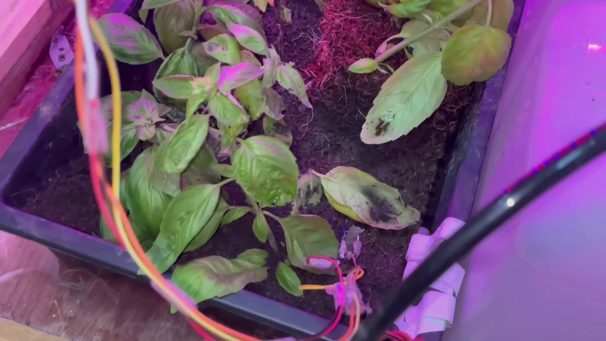
        <figcaption>The tray, with both probes and the irrigation line.</figcaption>
      </figure>

      <!-- 6 -->
      <h2>Disease detection</h2>
      <p>This is the part I spent the most thought on, because it decides when to put chemical on food.</p>
      <p>Two facts about downy mildew shaped it: it needs damp, still air, and it releases its spores in darkness. So the first response isn't the spray at all — it's the fan. Past 70% humidity the fan runs, harder the further past it goes, and through the night it holds a fixed 40% regardless of readings. The original design switched the fan off at night, which meant switching off the defence during exactly the hours it was needed.</p>
      <p>A brief humidity spike doesn't infect anything; the fungus needs sustained conditions to establish. So instead of a threshold the system keeps a running count:</p>

      <div class="eq">R  +=  1.00  if  (RH ≥ 85%)  and  (15 °C ≤ T ≤ 25 °C)<br>R  −=  0.25  otherwise<br>spray when  R ≥ 60<br><span class="note">Temperature is in the test because 90% humidity at 32 °C is harmless — the fungus can't grow that warm.</span></div>

      <p>It rises four times faster than it falls, and that asymmetry is deliberate. When the air dries the leaf doesn't dry instantly, so some risk remains. The original design reset to zero on any dip, which meant six hours of genuine danger could be wiped out by one brief dry reading. Once it sprays it latches, and won't fire again until the counter returns to zero — repeated application on an edible herb means residue, leaf burn, and the fungus developing resistance.</p>

      <div class="callout">
        <div class="eyebrow">The part worth saying out loud</div>
        <p>The fan turns on at 70% humidity. The counter needs 85%. So the fan is actively suppressing the condition the counter is waiting for, and in a 174-litre enclosure it may never sit above 85% for a full hour. The spray may never fire on its own.</p>
        <p>That's the system working. The counter isn't measuring humidity — it's measuring how long dangerous conditions persist <em>despite</em> the fan. On a plant you're going to eat, a spray system that rarely fires is the right outcome.</p>
      </div>

      <!-- 6 -->
      <h2>The spray mechanism</h2>
      <p>When the counter does trip, an XY gantry carries a nozzle across the tray. Two NEMA 17 steppers on TB6600 drivers at quarter-step, belt-driven on aluminium extrusion.</p>

      <div class="eq">800 pulses/rev ⁄ (20-tooth GT2 × 2 mm pitch)  =  <strong>20 steps/mm</strong></div>

      <figure>
        <video src="vid/gantry.mp4" poster="img/poster-gantry.jpg" controls muted loop playsinline preload="metadata"></video>
        <figcaption>A pass across the tray. The pump only fires across the constant-speed middle.</figcaption>
      </figure>

      <figure>
        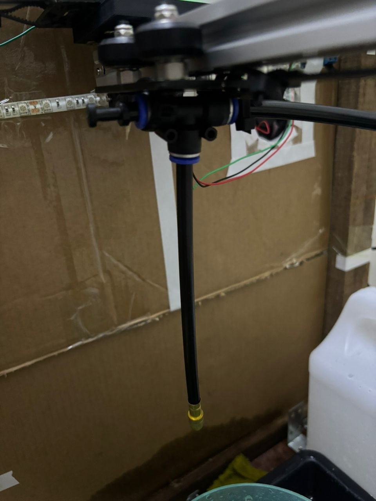
        <figcaption>The carriage: push-fit fittings, an 18.5 cm lance, and the brass nozzle at the tip.</figcaption>
      </figure>

      <h3>Homing twice</h3>
      <p>A stepper has no position feedback, so if a step was ever missed the firmware's idea of position has drifted from reality. The gantry re-homes before every cycle, in two passes: a fast approach finds the limit switch but overshoots by a variable amount, so the carriage backs off 5 mm and re-approaches slowly. That second, slow contact is what sets the datum.</p>

      <figure>
        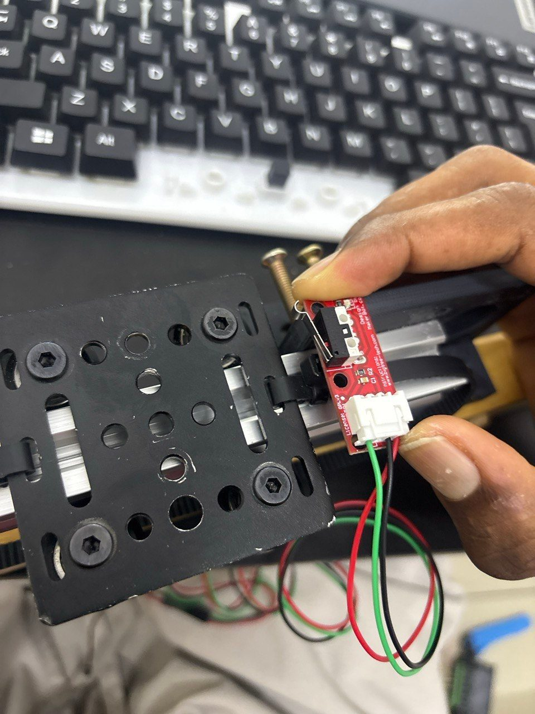
        <figcaption>The limit switch that defines zero. Normally-open, wired to an input pull-up, so a disconnected wire reads as not-triggered.</figcaption>
      </figure>

      <h3>Why the pump isn't on the whole time</h3>
      <p>A stepper can't start at cruise speed, so each pass ramps from 1600 µs per step at rest down to 700 µs at cruise and back up. That's 800 steps — 40 mm — spent accelerating at each end.</p>
      <p>Those ramp zones are deliberately dry. The carriage is slow there, and a pump at constant flow would put far more liquid per millimetre into the slow sections than the fast middle: soaked edges, starved centre. So the pump fires only across the constant-speed section, with a 250 ms lead-in because liquid takes a moment to travel the 57 cm of tube.</p>

      <h3>The measurement that changed the design</h3>
      <p>Before building the raster I sprayed the nozzle onto paper at its real mounted height and measured the wet pattern. <strong>190 mm across.</strong></p>
      <p>The original plan was five passes. With a 190 mm cone, spacing them that tightly means each pass overlaps its neighbour by about 125 mm — the same ground treated nearly three times over. Three passes still overlap enough to leave no dry gaps, cover the same tray, and use <strong>40% less chemical</strong>.</p>
      <p>The numbers close against the machine's own log. A 260 mm pass at 20 steps/mm is 5200 steps; minus 800 at each end leaves 3600 steps of spraying at 700 µs:</p>

      <div class="eq">3600 × 700 µs  =  2.52 s per row<br>3 rows ⁄ 60 × 653 mL/min  =  <strong>82.3 mL per cycle</strong></div>

      <pre class="log">--- SPRAY RASTER START ---
Row 1  Y = 0 mm   X out
  sweep 4529 ms   spray <b>2520 ms</b>   avg 57.4 mm/s
...
--- RASTER DONE in 18.7 s ---
Spray time 7560 ms   estimated volume <b>82.3 mL</b></pre>

      <!-- 7 -->
      <h2>The dashboard</h2>
      <p>Everything above runs without a phone. The dashboard is a window, not a controller, and that distinction is the design.</p>
      <p>Twenty-eight datastreams go up to Blynk — live readings, actuator states, the disease counter, gantry position, fault flags — and controls come back down: three modes per actuator, setpoint sliders, a spray trigger, an emergency stop.</p>

      <figure>
        
        <figcaption>Every control is echoed on the serial console as it reaches the device.</figcaption>
      </figure>

      <p>Two things I had to fix. The first build transmitted on every loop iteration — thousands of messages a minute, which blew through the free tier in minutes and measurably slowed the loop. Now it's a five-second cadence and a value is only sent once it moves beyond a deadband. The second is subtler: a manual override is useful right up until someone switches the lamp on to check it works and walks away. Overrides now expire after ten minutes, and the plant-protection limits sit above them — the 16 mol light ceiling and the empty-tank block can't be overridden at all.</p>
      <p>Credentials aren't compiled in either. On first power-up the ESP32 raises its own access point and a captive portal, so moving the greenhouse to a different building takes thirty seconds on a phone instead of a laptop and a re-flash.</p>
      <p>If the WiFi drops, the greenhouse keeps working. Every measurement is local and every decision is made on the ESP32 — the display stops updating and the manual controls stop responding, and the plant is unaffected.</p>

      <!-- 8 -->
      <h2>Cost</h2>
      <p>The university allocation for a final year project is RM 300. The build came to roughly <strong>RM 1,070</strong> and I funded the difference myself.</p>

      <div class="tbl"><table>
        <thead><tr><th>Item</th><th>Qty</th><th>Cost</th></tr></thead>
        <tbody>
          <tr><td>NEMA 17 stepper motor (42×23)</td><td class="num">2</td><td class="num">RM 55.84</td></tr>
          <tr><td>TB6600 stepper driver</td><td class="num">2</td><td class="num">—</td></tr>
          <tr><td>2020 aluminium extrusion</td><td class="num">4</td><td class="num">—</td></tr>
          <tr><td>GT2 belt, 20-tooth pulleys, idlers</td><td class="num">1 set</td><td class="num">—</td></tr>
          <tr><td>V-wheel carriage plates</td><td class="num">2</td><td class="num">—</td></tr>
          <tr><td>Limit switch modules</td><td class="num">2</td><td class="num">—</td></tr>
          <tr><td>ESP32-WROOM-32</td><td class="num">1</td><td class="num">—</td></tr>
          <tr><td>Arduino UNO</td><td class="num">1</td><td class="num">—</td></tr>
          <tr><td>DHT22 temperature / humidity sensor</td><td class="num">1</td><td class="num">—</td></tr>
          <tr><td>DS3231 real-time clock</td><td class="num">1</td><td class="num">—</td></tr>
          <tr><td>LDR light sensor</td><td class="num">1</td><td class="num">—</td></tr>
          <tr><td>Resistive soil moisture probe</td><td class="num">2</td><td class="num">—</td></tr>
          <tr><td>Water level sensor</td><td class="num">1</td><td class="num">—</td></tr>
          <tr><td>2-channel optocoupler relay module</td><td class="num">1</td><td class="num">—</td></tr>
          <tr><td>JZ-MOS MOSFET driver module</td><td class="num">2</td><td class="num">—</td></tr>
          <tr><td>R385 diaphragm pump (pesticide)</td><td class="num">1</td><td class="num">—</td></tr>
          <tr><td>Irrigation pump</td><td class="num">1</td><td class="num">—</td></tr>
          <tr><td>Nozzle, tubing, push-fit fittings, tanks</td><td class="num">1 set</td><td class="num">—</td></tr>
          <tr><td>Red–blue LED grow panel</td><td class="num">1</td><td class="num">—</td></tr>
          <tr><td>12 V cooling fan</td><td class="num">1</td><td class="num">—</td></tr>
          <tr><td>5 V 3 A and 12 V 5 A supplies</td><td class="num">2</td><td class="num">—</td></tr>
          <tr><td>Timber, plywood, acrylic, fasteners, varnish</td><td class="num">1 set</td><td class="num">—</td></tr>
          <tr><td>PLA filament</td><td class="num">1 kg</td><td class="num">—</td></tr>
          <tr><td><strong>Total</strong></td><td></td><td class="num"><strong>≈ RM 1,070</strong></td></tr>
        </tbody>
      </table></div>

      <p>Almost all of the overspend sits in the motion hardware — the steppers, drivers, extrusion and linear parts. There is no low-cost substitute for any of it if the gantry has to hold position repeatably. The two controllers, six sensors, two pumps, the LED panel and the fan together cost less than the motion side on its own.</p>
      <p>The control logic would scale to a commercial greenhouse unchanged. The mechanics wouldn't — a belt gantry over 260 mm of travel doesn't extend to twenty metres, and a real installation would use fixed spray lines and zone valves driven by the same decision logic. The thinking layer costs the same whatever the area; only the acting layer scales.</p>

      <!-- 9 -->
      <h2>Conclusion</h2>
      <p>The whole project comes down to one idea: a timer doesn't know what the plant received, and a measurement does. Lighting landed within 0.3% of its target. Irrigation waters on what the soil says and then verifies it worked. The spray decides on accumulated evidence and uses 40% less chemical than the first design, because I measured the cone instead of assuming it.</p>
      <p>What surprised me is where the time went. Not the control laws — those were the enjoyable part. It went into the interfaces between components that each worked perfectly alone: a relay polarity, a MOSFET polarity, a 3.3 V output that couldn't trigger a 5 V board, a missing pull-up. None of them appear in a code review, and all of them look like software bugs until you put a meter on them.</p>
      <p>If I built it again I'd replace the photoresistor with a calibrated quantum sensor, so the light figure becomes a measurement rather than an estimate, and I'd service the serial link inside the motion loop so the emergency stop can interrupt a spray already in progress. The resistive soil probes would go too — they corrode, and capacitive ones are the right part for anything running longer than a demonstration.</p>

      <dl class="meta">
        <div><dt>Role</dt><dd>Everything</dd></div>
        <div><dt>Duration</dt><dd>Two semesters</dd></div>
        <div><dt>Controllers</dt><dd>ESP32 + Arduino UNO</dd></div>
        <div><dt>Supervisor</dt><dd>Dr. Mohamed Khan</dd></div>
      </dl>

    </article>
  </div>
</main>

<footer class="wrap">Hassan Nosreldin Suliman Haroun · BEng (Hons) Mechatronic Engineering, UCSI University</footer>

<script>
(function () {
  var views = { home: document.getElementById('view-home'),
                greenhouse: document.getElementById('view-greenhouse') };
  var tocList = document.getElementById('tocList');
  var article = document.getElementById('article');

  function slug(s) {
    return s.toLowerCase().replace(/[^a-z0-9]+/g, '-').replace(/^-|-$/g, '');
  }

  // Build the section index from the article's own <h2> headings, so adding
  // a section to the prose adds it to the sidebar automatically.
  function buildToc() {
    if (!article || !tocList || tocList.children.length) return;
    var hs = article.querySelectorAll('h2');
    hs.forEach(function (h) {
      if (!h.id) h.id = slug(h.textContent);
      var li = document.createElement('li');
      var a = document.createElement('a');
      a.href = '#' + h.id;
      a.textContent = h.textContent;
      a.addEventListener('click', function (e) {
        e.preventDefault();
        h.scrollIntoView({ behavior: 'smooth', block: 'start' });
        history.replaceState(null, '', '#greenhouse');
      });
      li.appendChild(a);
      tocList.appendChild(li);
    });

    var links = tocList.querySelectorAll('a');
    function mark(id) {
      links.forEach(function (a) { a.classList.toggle('on', a.getAttribute('href') === '#' + id); });
    }
    mark(hs[0].id);

    if ('IntersectionObserver' in window) {
      var seen = {};
      var spy = new IntersectionObserver(function (entries) {
        entries.forEach(function (en) { seen[en.target.id] = en.isIntersecting; });
        for (var i = 0; i < hs.length; i++) {
          if (seen[hs[i].id]) { mark(hs[i].id); return; }
        }
      }, { rootMargin: '-100px 0px -72% 0px' });
      hs.forEach(function (h) { spy.observe(h); });
    }
  }

  function show(name) {
    if (!views[name]) name = 'home';
    Object.keys(views).forEach(function (k) { views[k].hidden = (k !== name); });
    document.querySelectorAll('[data-nav]').forEach(function (a) {
      a.classList.toggle('on', a.dataset.nav === name);
    });
    if (name === 'greenhouse') buildToc();
  }

  function route() {
    var h = (location.hash || '').replace('#', '');
    if (views[h]) { show(h); window.scrollTo(0, 0); }
    else if (!h) { show('home'); }
  }

  window.addEventListener('hashchange', route);
  route();

  var btn = document.getElementById('copyBtn');
  var mail = document.getElementById('email');
  if (btn && mail) {
    btn.addEventListener('click', function () {
      var done = function () { btn.textContent = 'Copied'; setTimeout(function () { btn.textContent = 'Copy'; }, 1600); };
      var fallback = function () {
        var r = document.createRange(); r.selectNodeContents(mail);
        var s = getSelection(); s.removeAllRanges(); s.addRange(r);
      };
      try { navigator.clipboard.writeText(mail.textContent.trim()).then(done, fallback); }
      catch (e) { fallback(); }
    });
  }
})();
</script>
